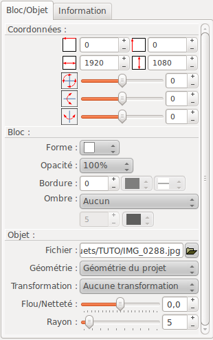
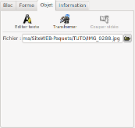
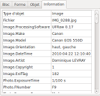

Modifier des
diapositives Modifier des
diapositives
Modifier des
diapositives Modifier des
diapositives |
Ajouter un plan |
Ajoute un plan à la
fin de la barre de temps |
 |
Supprimer un plan |
Supprime le plan
actuellement sélectionné, de la barre de temps |
| A gauche |
Change l'ordre des plans
en déplaçant le plan actuellement
sélectionné, d'un cran vers la gauche |
|
| A droite |
Change l'ordre des plans en déplaçant le plan actuellement sélectionné, d'un cran vers la droite | |
 |
Marges TV |
Active ou désactive
les guides correspondant aux marges des
téléviseurs. |
| Durée du plan : |
Indiquer ici la
durée que vous souhaiter pour le plan actuellement
sélectionné. Pour le dernier plan de la diapositive, la notion de durée minimale intervient. Les règles
suivantes s'appliquent pour calculer la durée
minimale des plans :
|
| Durée total
(diapositive) : |
La durée
cumulée des plans de la diapositive est
affichée ici. Cette durée tient compte des éventuels ajustement de durée minimale des plan. |
 |
Ajouter titre |
Ajoute un nouveau bloc de
type titre. |
 |
Ajouter fichier |
Ajoute un nouveau bloc de
type image ou vidéo. La boite de dialogue de
sélection de fichier apparaît vous permettant
de sélectionner un fichier (il n'est pas possible
de sélectionner plusieurs fichiers.) |
|
Supprimer |
Supprime le bloc actif |
 |
Copier |
Copie le bloc actif dans
le presse papier de ffDiaporama. La copie s'effectue avec les paramètres de bloc tel qu'ils sont définis pour le plan actuellement sélectionné. |
 |
Couper |
Copie le bloc actif dans
le presse papier de ffDiaporama et le supprime de la
diapositive. La copie s'effectue avec les paramètres de bloc tel qu'ils sont définis pour le plan actuellement sélectionné. |
 |
Coller |
Colle le bloc
actuellement présent dans le presse papier et
l'insère. |
| En haut |
Change l'ordre des blocs
en déplaçant le bloc actif vers le haut (vers
l'arrière plan) |
|
| En bas |
Change l'ordre des blocs en déplaçant le bloc actif vers le bas (vers le premier plan) |
 =Titre,
=Titre, =Image,
=Image,  =Vidéo)
=Vidéo) apparaît
pour le bloc qui a le son
apparaît
pour le bloc qui a le son|  |  |
Cliquer
sur ce bouton pour rendre visible ou invisible le bloc
actif. Note : Les blocs vidéos invisibles sont
automatiquement mis en pause |
|
|
Ce bouton n'est actif que pour des vidéos. Cliquer sur ce bouton pour donner le son, pendant ce plan, au bloc vidéo actuellement actif | ||
 |
Représente
la position horizontal du bloc à partir de la
gauche. Cette position est exprimée en pourcentage
(%) de la largeur total de l'image. |
||
 |
Représente la position vertical du bloc à partir du haut de l'image. Cette position est exprimée en pourcentage (%) de la hauteur total de l'image. | ||
 |
Représente la largeur du bloc. Cette position est exprimée en pourcentage (%) de la largeur total de l'image. | ||
 |
Représente la hauteur du bloc. Cette position est exprimée en pourcentage (%) de la hauteur total de l'image. | ||
 |
Rotation
selon l'axe des Z exprimée en degré. |
||
 |
Rotation selon l'axe des Y exprimée en degré. | ||
 |
Rotation selon l'axe des X exprimée en degré. | ||
| Forme |
Permet
de sélectionner une forme pour le bloc. La forme
sélectionnée servira :
|
||
| Bordure |
Épaisseur
de la bordure |
Définie l'épaisseur de la bordure (Cette valeur est exprimée en 1/1080eme de la hauteur de l'écran, c'est à dire qu'une valeur de 10 correspond à 10 points sur un écran FullHD 1920x1080, mais seulement à 6 points sur un écran 1280x720). | |
| Couleur
de bordure |
Définie la couleur du trait à utiliser pour dessiner la bordure | ||
| Type de
trait de bordure |
Définie le type de trait (plein, pointillé, etc...) | ||
| Ombre |
Position de l'ombre |
Définie dans quel
coin l'ombre sera positionnée (Note : La position
de l'ombre est indépendante des rotations du bloc :
Le coin inférieur droit est toujours le coin
inférieur droit quelque soit les rotations
appliquées au bloc) |
|
| Distance de l'ombre | Définie la distance
entre le bloc et son ombre |
||
| Opacité |
Opacité |
Définie
l'opacité du bloc. Cette valeur s'applique
également au texte du bloc. |
|
|  |  |
Cliquer sur ce bouton
pour appeler la boite Éditer
le texte du bloc. |
|||||||||||
 |
Cliquer sur le bouton
pour appeler la boite de dialogue Recadrer
et/ou corriger une image ou une vidéo |
||||||||||||
 |
Cliquer sur ce bouton
pour appeler la boite Découper
une vidéo. Note : Ce bouton n'est actif que
pour les objets contenant des vidéos. |
||||||||||||
En fonction du type
d'objet, différents contenus sont possibles :
Le nom du fichier. Le
bouton
 permet de changer de fichier
permet de changer de fichier
Géométrie : Permet de sélectionner la contrainte géométrique à appliquer au bloc. Trois type de contrainte sont disponibles :
|
|  | Affiche des informations
sur le bloc :
|
 WIKIPEDIA |
Explications
sur les marges TV et "l'overscan" Explications sur l'EXIF-Exchangeable image file format |